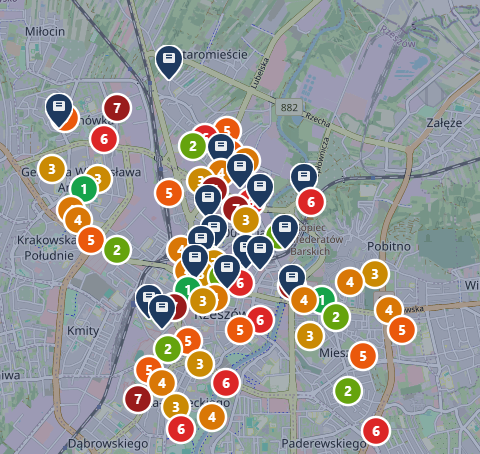

Gminy, miasta i powiaty stoją dziś przed presją demograficzną i ograniczeniami budżetowymi jednocześnie. Konsorcjum Bonam Curam oferuje samorządom zintegrowany model — od diagnozy potrzeb, przez optymalizację istniejących obiektów, po rozwój infrastruktury i budowę spójnego systemu opieki rozproszonej.
Każdy obszar działa samodzielnie i przynosi mierzalny efekt — ale razem tworzą kompletny system opieki senioralnej dla Twojej jednostki. Zaczynamy tam, gdzie potrzeba jest największa.
Zaczynamy od rzetelnej diagnozy: kto w gminie wymaga opieki, w jakim zakresie i gdzie system ma luki. Następnie wyposażamy lokale gminne i mieszkania wspomagane w technologię, która pozwala objąć opieką więcej osób bez proporcjonalnego wzrostu kosztów.

Gminne DPS-y i ośrodki opiekuńcze generują koszty w wielu obszarach jednocześnie. Nasz system optymalizacji identyfikuje straty i wprowadza realne oszczędności — bez obniżania standardu opieki, dzięki lepszej organizacji i właściwym narzędziom.
Tam, gdzie brakuje miejsc opieki, wspieramy samorząd w rozbudowie infrastruktury — od koncepcji, przez finansowanie i budowę, po uruchomienie i prowadzenie. Dobieramy formę obiektu do realnych potrzeb gminy i możliwości budżetowych.
Nowe budowy i adaptacje istniejących budynków pod standard opieki stacjonarnej.
Dzienna i całodobowa opieka dla osób z niepełnosprawnościami i seniorów.
Samodzielne mieszkanie z dostępnym wsparciem opiekuńczym na żądanie.
Zintegrowane osiedla łączące mieszkanie, opiekę, rehabilitację i usługi.
Najbardziej zaawansowany obszar współpracy: łączymy istniejące zasoby i instytucje gminy — DPS, OPS, COM, lokale wspomagane, opiekunów terenowych, POZ — w jeden spójny, koordynowany system opieki rozproszonej. Senior otrzymuje opiekę tam, gdzie mieszka, a gmina zarządza nią z jednego miejsca.
Lokalna Strategia Senioralna na 5–10 lat zawiera analizę demograficzną do 2035 roku, plan inwestycyjny, macierz finansowania i benchmarking europejski. Jest wymagana do większości środków UE — i staje się mapą drogową łączącą cztery obszary współpracy w jedną, spójną politykę senioralną gminy.
Zaczynamy od diagnozy i konkretnych liczb — a kończymy gotowym planem finansowania i wdrożenia. Powiedz nam, gdzie potrzeba jest największa, a wskażemy, od którego obszaru zacząć.
Konsultacja →